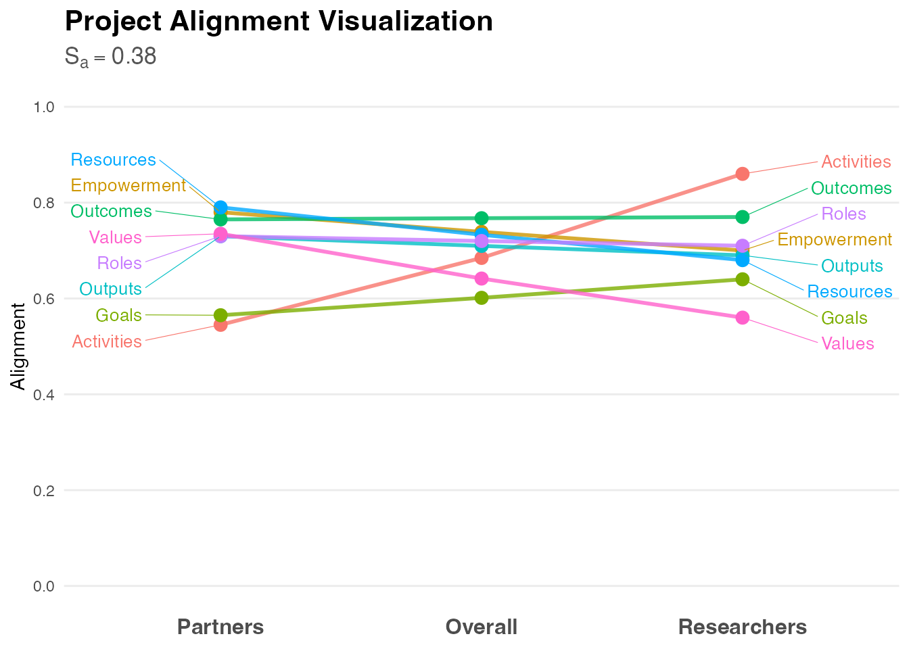
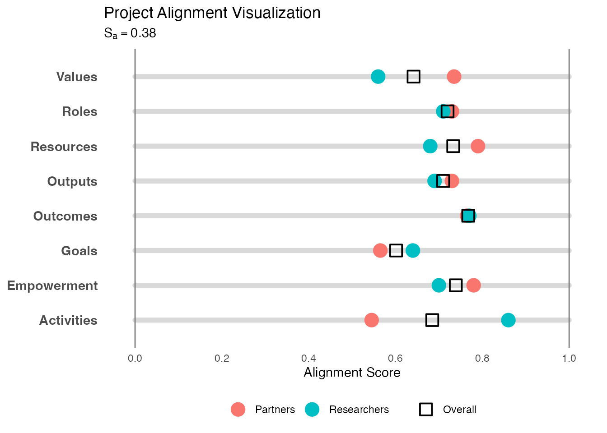
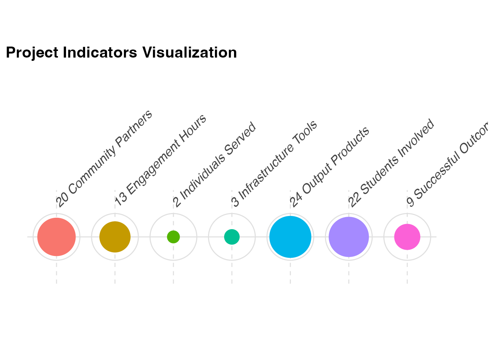
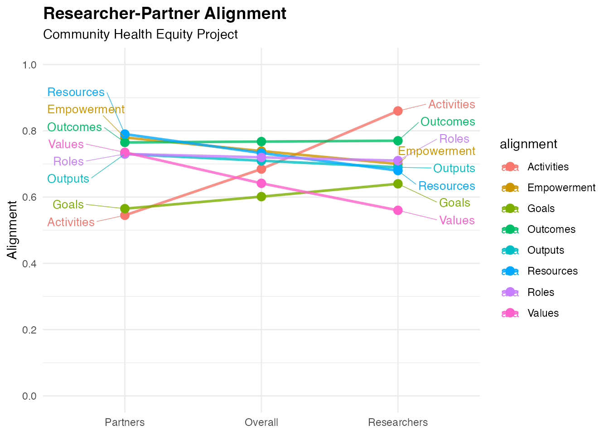
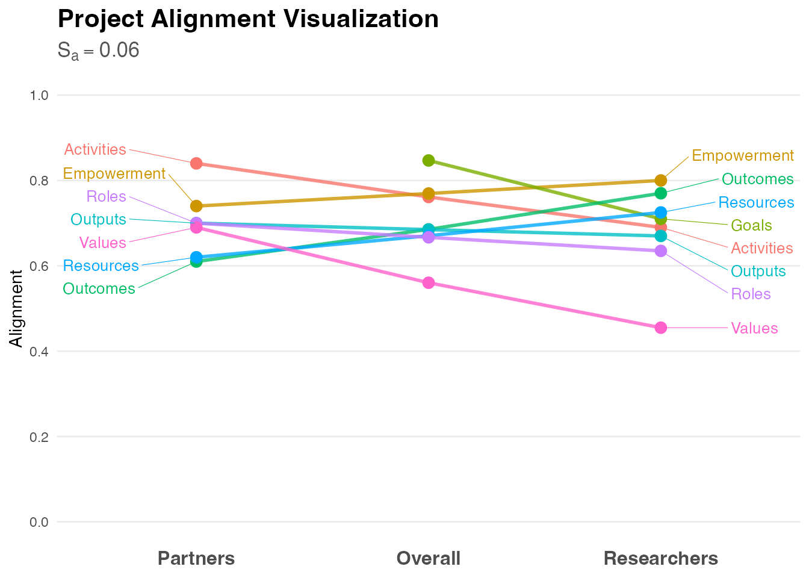

Introduction
The centrimpact package provides tools for analyzing and
visualizing community-engaged research metrics based on the CEnTR*IMPACT
framework (Price, 2024). This framework quantifies four critical
dimensions of community-engaged research that go beyond traditional
academic metrics:
- Alignment - Shared vision between researchers and partners
- Cascade Effects - Ripple effects across social networks
- Dynamics - Quality of partnership processes
- Indicators - Traditional academic productivity markers
This vignette demonstrates the basic workflow for analyzing each dimension and creating publication-ready visualizations.
Installation
# Install from GitHub
devtools::install_github("CENTR-IMPACT/centrimpact-review")Analyzing Project Alignment
The Alignment Score (Sa) quantifies consensus between researchers and community partners across four key areas: Goals, Values, Roles, and Resources. Higher scores indicate stronger shared vision.
Generate and Analyze Data
# Generate example alignment data
alignment_data <- generate_alignment_data(seed = 36)
# View the structure
head(alignment_data)
#> alignment role rating
#> 1 Goals researcher 0.53
#> 2 Goals researcher 0.85
#> 3 Goals researcher 0.37
#> 4 Goals researcher 0.97
#> 5 Goals researcher 0.64
#> 6 Goals partner 0.42
# Analyze alignment
alignment_results <- analyze_alignment(alignment_data)
# View results
print(alignment_results)
#> $table
#> alignment partner researcher
#> 1 Activities 0.545 0.86
#> 2 Empowerment 0.780 0.70
#> 3 Goals 0.565 0.64
#> 4 Outcomes 0.765 0.77
#> 5 Outputs 0.730 0.69
#> 6 Resources 0.790 0.68
#> 7 Roles 0.730 0.71
#> 8 Values 0.735 0.56
#>
#> $plot_data
#> alignment role rating min_val max_val
#> 1 Activities partner 0.5450000 0.545 0.545
#> 2 Activities researcher 0.8600000 0.860 0.860
#> 3 Empowerment partner 0.7800000 0.780 0.780
#> 4 Empowerment researcher 0.7000000 0.700 0.700
#> 5 Goals partner 0.5650000 0.565 0.565
#> 6 Goals researcher 0.6400000 0.640 0.640
#> 7 Outcomes partner 0.7650000 0.765 0.765
#> 8 Outcomes researcher 0.7700000 0.770 0.770
#> 9 Outputs partner 0.7300000 0.730 0.730
#> 10 Outputs researcher 0.6900000 0.690 0.690
#> 11 Resources partner 0.7900000 0.790 0.790
#> 12 Resources researcher 0.6800000 0.680 0.680
#> 13 Roles partner 0.7300000 0.730 0.730
#> 14 Roles researcher 0.7100000 0.710 0.710
#> 15 Values partner 0.7350000 0.735 0.735
#> 16 Values researcher 0.5600000 0.560 0.560
#> 17 Activities overall 0.6846167 NA NA
#> 18 Empowerment overall 0.7389181 NA NA
#> 19 Goals overall 0.6013319 NA NA
#> 20 Outcomes overall 0.7674959 NA NA
#> 21 Outputs overall 0.7097183 NA NA
#> 22 Resources overall 0.7329393 NA NA
#> 23 Roles overall 0.7199306 NA NA
#> 24 Values overall 0.6415606 NA NA
#>
#> $icc
#> Single Score Intraclass Correlation
#>
#> Model: twoway
#> Type : agreement
#>
#> Subjects = 8
#> Raters = 2
#> ICC(A,1) = -0.383
#>
#> F-Test, H0: r0 = 0 ; H1: r0 > 0
#> F(7,6.99) = 0.515 , p = 0.799
#>
#> 95%-Confidence Interval for ICC Population Values:
#> -1.05 < ICC < 0.473
#>
#> $alignment_score
#> [1] 0.3829787
#>
#> attr(,"class")
#> [1] "alignment_analysis"Visualize with Slopegraph
The slopegraph shows how researcher and partner ratings compare across domains:
# Create slopegraph visualization
plot_slopegraph <- visualize_alignment(alignment_results)
print(plot_slopegraph)
Visualize with Abacus Plot
The abacus plot provides an alternative view of alignment patterns:
# Create abacus plot
plot_abacus <- visualize_abacus(alignment_results)
print(plot_abacus)
Analyzing Cascade Effects
The Cascade Effects Score (Sc) quantifies how information and power distribute across three degrees of separation from core participants, based on social network analysis principles.
Generate and Analyze Data
# Generate example cascade data (returns a one-row survey parameter frame)
cascade_data <- generate_cascade_data(seed = 36)
# View the structure
print(cascade_data)
#> cascade_d1_people_1_1 cascade_d1_people_2_1 cascade_d2_people_1_1
#> 1 6 4 4
#> cascade_d2_people_2_1 cascade_d2_stats_1 cascade_d2_stats_2 cascade_d3_people
#> 1 4 0.06 0.29 2
#> cascade_d3_stats_1 cascade_d3_stats_2
#> 1 0.04 0.08
# Analyze cascade effects
cascade_results <- analyze_cascade(cascade_data)
#> Running full exact analysis (~356 expected edges).
# View results
print(cascade_results)
#> $summary
#> # A tibble: 3 × 9
#> layer count gamma layer_knitting layer_bridging layer_channeling
#> <int> <int> <dbl> <dbl> <dbl> <dbl>
#> 1 1 10 0.9 0.462 0.866 0.768
#> 2 2 40 0.5 0.311 0.671 0.525
#> 3 3 80 0.45 0.304 0.0214 0.117
#> # ℹ 3 more variables: layer_reaching <dbl>, layer_score <dbl>,
#> # layer_number <chr>
#>
#> $node_data
#> name layer gamma knitting bridging channeling reaching
#> 1 1 1 0.90 0.2310191 0.8914286 0.761128885 8.687130e-01
#> 2 2 1 0.90 0.4410191 0.8914286 0.842286629 8.746834e-01
#> 3 3 1 0.90 0.8610191 0.8914286 0.817723573 8.568997e-01
#> 4 4 1 0.90 0.4410191 0.7714286 0.623909285 8.531427e-01
#> 5 5 1 0.90 0.4410191 0.8914286 0.801594718 8.872156e-01
#> 6 6 1 0.90 0.2310191 1.0000000 1.000000000 1.000000e+00
#> 7 7 1 0.90 0.2310191 0.8914286 0.805660476 8.726926e-01
#> 8 8 1 0.90 0.4410191 0.8914286 0.818248382 9.083834e-01
#> 9 9 1 0.90 0.4410191 0.7714286 0.693940714 8.399535e-01
#> 10 10 1 0.90 0.8610191 0.7714286 0.518150963 8.705867e-01
#> 11 11 2 0.50 0.2476336 0.7714286 0.647774315 2.357223e-01
#> 12 12 2 0.50 0.3456865 0.6285714 0.436476124 6.629096e-02
#> 13 13 2 0.50 0.3058511 0.6285714 0.436476124 6.629096e-02
#> 14 14 2 0.50 0.3959871 0.6285714 0.436476124 1.397907e-01
#> 15 15 2 0.50 0.3931732 0.7714286 0.686983766 2.082751e-01
#> 16 16 2 0.50 0.3006751 0.6285714 0.503779818 6.696343e-02
#> 17 17 2 0.50 0.2570330 0.6285714 0.503779818 6.696343e-02
#> 18 18 2 0.50 0.4005983 0.6285714 0.503779818 6.696343e-02
#> 19 19 2 0.50 0.2613928 0.6285714 0.482505536 6.494104e-02
#> 20 20 2 0.50 0.4600816 0.6285714 0.482505536 6.494104e-02
#> 21 21 2 0.50 0.2310191 0.7714286 0.659675143 9.909114e-02
#> 22 22 2 0.50 0.2910092 0.6285714 0.482505536 1.384408e-01
#> 23 23 2 0.50 0.2752293 0.6285714 0.433499082 1.227962e-01
#> 24 24 2 0.50 0.2722332 0.7714286 0.679989784 2.192931e-01
#> 25 25 2 0.50 0.3678516 0.6285714 0.433499082 9.829632e-02
#> 26 26 2 0.50 0.2832792 0.6285714 0.433499082 4.929651e-02
#> 27 27 2 0.50 0.3310426 0.6285714 0.468701335 6.819949e-02
#> 28 28 2 0.50 0.2909445 0.7714286 0.643832394 2.135120e-01
#> 29 29 2 0.50 0.2722332 0.6285714 0.468701335 6.819949e-02
#> 30 30 2 0.50 0.2440603 0.6285714 0.468701335 6.819949e-02
#> 31 31 2 0.50 0.2837613 0.7714286 0.683679382 2.136962e-01
#> 32 32 2 0.50 0.2310191 0.6285714 0.525892539 9.012599e-02
#> 33 33 2 0.50 0.3192071 0.7714286 0.699558217 2.032272e-01
#> 34 34 2 0.50 0.3482623 0.6285714 0.525892539 1.391258e-01
#> 35 35 2 0.50 0.2310191 0.6285714 0.472492272 6.506078e-02
#> 36 36 2 0.50 0.3707362 0.6285714 0.472492272 6.506078e-02
#> 37 37 2 0.50 0.2486168 0.7714286 0.670800035 2.009685e-01
#> 38 38 2 0.50 0.2740614 0.6285714 0.472492272 1.140606e-01
#> 39 39 2 0.50 0.3289623 0.6285714 0.486892710 1.179417e-01
#> 40 40 2 0.50 0.3107460 0.6285714 0.486892710 6.894189e-02
#> 41 41 2 0.50 0.2775804 0.7714286 0.696971196 2.634384e-01
#> 42 42 2 0.50 0.2810420 0.6285714 0.513714144 8.263349e-02
#> 43 43 2 0.50 0.3081590 0.6285714 0.497918175 4.979089e-02
#> 44 44 2 0.50 0.5810191 0.6285714 0.497918175 6.612416e-02
#> 45 45 2 0.50 0.3401606 0.6285714 0.532764957 1.134621e-01
#> 46 46 2 0.50 0.2722332 0.7714286 0.709770950 1.859441e-01
#> 47 47 2 0.50 0.2551971 0.7714286 0.476873322 1.336329e-01
#> 48 48 2 0.50 0.4402654 0.6285714 0.362452981 8.687832e-02
#> 49 49 2 0.50 0.2381512 0.7714286 0.578073191 2.715398e-01
#> 50 50 2 0.50 0.2697450 0.6285714 0.326726583 6.491119e-02
#> 51 51 3 0.45 0.3381864 0.0000000 0.131129373 1.997112e-02
#> 52 52 3 0.45 0.5352767 0.0000000 0.131129373 7.509591e-02
#> 53 53 3 0.45 0.3294841 0.0000000 0.063899810 3.374881e-03
#> 54 54 3 0.45 0.2310191 0.0000000 0.063899810 3.374881e-03
#> 55 55 3 0.45 0.3768237 0.0000000 0.063899810 2.174981e-02
#> 56 56 3 0.45 0.2594669 0.0000000 0.063899810 3.374881e-03
#> 57 57 3 0.45 0.2456855 0.0000000 0.063899810 3.374881e-03
#> 58 58 3 0.45 0.2636547 0.0000000 0.063899810 3.374881e-03
#> 59 59 3 0.45 0.3619790 0.0000000 0.163670063 2.005613e-02
#> 60 60 3 0.45 0.4626586 0.0000000 0.163670063 5.155601e-02
#> 61 61 3 0.45 0.2840413 0.0000000 0.119837217 3.475457e-03
#> 62 62 3 0.45 0.3689594 0.0000000 0.119837217 2.239746e-01
#> 63 63 3 0.45 0.2508059 0.0000000 0.119837217 3.475457e-03
#> 64 64 3 0.45 0.2351713 0.0000000 0.119837217 3.475457e-03
#> 65 65 3 0.45 0.2883897 0.0000000 0.119837217 3.475457e-03
#> 66 66 3 0.45 0.3463329 0.0000000 0.119837217 3.475457e-03
#> 67 67 3 0.45 0.2310191 0.0000000 0.102277803 3.171421e-03
#> 68 68 3 0.45 0.3094132 0.0000000 0.102277803 3.171421e-03
#> 69 69 3 0.45 0.2689447 0.0000000 0.102277803 3.171421e-03
#> 70 70 3 0.45 0.3089000 0.0000000 0.102277803 3.171421e-03
#> 71 71 3 0.45 0.3221706 0.0000000 0.143719974 5.597495e-02
#> 72 72 3 0.45 0.2330344 0.0000000 0.143719974 1.187512e-02
#> 73 73 3 0.45 0.2805217 0.0000000 0.102277803 3.171421e-03
#> 74 74 3 0.45 0.2829164 0.0000000 0.102277803 3.171421e-03
#> 75 75 3 0.45 0.3751205 0.0000000 0.060882947 1.102496e-01
#> 76 76 3 0.45 0.3198483 0.0000000 0.060882947 0.000000e+00
#> 77 77 3 0.45 0.2851901 0.0000000 0.155036536 2.122241e-02
#> 78 78 3 0.45 0.2696205 0.0000000 0.155036536 2.122241e-02
#> 79 79 3 0.45 0.4376948 0.0000000 0.060882947 4.409983e-02
#> 80 80 3 0.45 0.2720390 0.0000000 0.060882947 0.000000e+00
#> 81 81 3 0.45 0.2310191 0.0000000 0.060882947 0.000000e+00
#> 82 82 3 0.45 0.3070574 0.0000000 0.060882947 0.000000e+00
#> 83 83 3 0.45 0.2975953 0.0000000 0.089854402 3.643575e-03
#> 84 84 3 0.45 0.3437040 0.0000000 0.089854402 6.979332e-02
#> 85 85 3 0.45 0.2405363 0.0000000 0.131242377 2.080677e-02
#> 86 86 3 0.45 0.3626060 0.0000000 0.131242377 2.080677e-02
#> 87 87 3 0.45 0.3420384 0.0000000 0.089854402 3.643575e-03
#> 88 88 3 0.45 0.3759121 0.0000000 0.089854402 3.643575e-03
#> 89 89 3 0.45 0.3685673 0.0000000 0.089854402 4.774341e-02
#> 90 90 3 0.45 0.2428298 0.0000000 0.089854402 3.643575e-03
#> 91 91 3 0.45 0.2649346 0.0000000 0.160670387 2.486598e-02
#> 92 92 3 0.45 0.2623500 0.0000000 0.160670387 2.486598e-02
#> 93 93 3 0.45 0.2679133 0.0000000 0.135126102 7.813157e-03
#> 94 94 3 0.45 0.3046883 0.0000000 0.135126102 7.813157e-03
#> 95 95 3 0.45 0.2855057 0.0000000 0.174915858 1.654167e-02
#> 96 96 3 0.45 0.2310191 0.0000000 0.174915858 1.654167e-02
#> 97 97 3 0.45 0.3208963 0.0000000 0.135126102 7.813157e-03
#> 98 98 3 0.45 0.2590785 0.0000000 0.135126102 7.813157e-03
#> 99 99 3 0.45 0.3377790 0.0000000 0.093742606 3.186992e-03
#> 100 100 3 0.45 0.5460191 0.0000000 0.093742606 3.258688e-02
#> 101 101 3 0.45 0.2643055 0.0000000 0.093742606 3.186992e-03
#> 102 102 3 0.45 0.3114527 0.0000000 0.093742606 3.186992e-03
#> 103 103 3 0.45 0.2767999 0.0000000 0.153964632 1.254068e-02
#> 104 104 3 0.45 0.2310191 0.0000000 0.153964632 1.254068e-02
#> 105 105 3 0.45 0.2463240 0.0000000 0.093742606 3.186992e-03
#> 106 106 3 0.45 0.3511262 0.0000000 0.093742606 3.186992e-03
#> 107 107 3 0.45 0.2850611 0.0000000 0.106196421 3.753944e-03
#> 108 108 3 0.45 0.2634972 0.0000000 0.106196421 3.753944e-03
#> 109 109 3 0.45 0.3252998 0.0000000 0.106196421 3.753944e-03
#> 110 110 3 0.45 0.3200912 0.0000000 0.106196421 6.990369e-02
#> 111 111 3 0.45 0.3311492 0.0000000 0.172816865 2.497635e-02
#> 112 112 3 0.45 0.2432690 0.0000000 0.172816865 2.497635e-02
#> 113 113 3 0.45 0.4420753 0.4285714 0.357393635 4.619592e-02
#> 114 114 3 0.45 0.3265094 0.0000000 0.140590359 6.627147e-03
#> 115 115 3 0.45 0.2868704 0.0000000 0.118513655 8.037924e-05
#> 116 116 3 0.45 0.2496596 0.0000000 0.118513655 8.037924e-05
#> 117 117 3 0.45 0.2944472 0.0000000 0.118513655 8.037924e-05
#> 118 118 3 0.45 0.3049567 0.0000000 0.118513655 8.037924e-05
#> 119 119 3 0.45 0.4012790 0.4285714 0.386875194 1.355279e-01
#> 120 120 3 0.45 0.2876536 0.0000000 0.159022532 3.092891e-03
#> 121 121 3 0.45 0.2764653 0.4285714 0.397474387 6.008921e-02
#> 122 122 3 0.45 0.3105502 0.0000000 0.194629420 1.985487e-02
#> 123 123 3 0.45 0.3138596 0.0000000 0.006477468 8.969169e-03
#> 124 124 3 0.45 0.2860127 0.0000000 0.006477468 8.969169e-03
#> 125 125 3 0.45 0.2865619 0.0000000 0.010122479 4.722804e-04
#> 126 126 3 0.45 0.2310191 0.0000000 0.010122479 4.722804e-04
#> 127 127 3 0.45 0.3048490 0.0000000 0.080393449 1.725641e-02
#> 128 128 3 0.45 0.2400665 0.0000000 0.080393449 1.725641e-02
#> 129 129 3 0.45 0.2474648 0.4285714 0.142613763 3.990934e-02
#> 130 130 3 0.45 0.2310191 0.0000000 0.000000000 3.246517e-03
#> composite_score
#> 1 0.68807239
#> 2 0.76235442
#> 3 0.85676773
#> 4 0.67237492
#> 5 0.75531450
#> 6 0.80775477
#> 7 0.70020019
#> 8 0.76476985
#> 9 0.68658547
#> 10 0.75529632
#> 11 0.47563969
#> 12 0.36925626
#> 13 0.35929740
#> 14 0.40020633
#> 15 0.51496517
#> 16 0.37499745
#> 17 0.36408692
#> 18 0.39997824
#> 19 0.35935270
#> 20 0.40902491
#> 21 0.44030349
#> 22 0.38513173
#> 23 0.36502400
#> 24 0.48573617
#> 25 0.38205461
#> 26 0.34866156
#> 27 0.37412871
#> 28 0.47992937
#> 29 0.35942637
#> 30 0.35238315
#> 31 0.48814135
#> 32 0.36890226
#> 33 0.49835526
#> 34 0.41046301
#> 35 0.34928589
#> 36 0.38421516
#> 37 0.47295347
#> 38 0.37229642
#> 39 0.39059203
#> 40 0.37378802
#> 41 0.50235463
#> 42 0.37649027
#> 43 0.37110987
#> 44 0.44340821
#> 45 0.40373976
#> 46 0.48484421
#> 47 0.40928297
#> 48 0.37954203
#> 49 0.46479818
#> 50 0.32248855
#> 51 0.12232173
#> 52 0.18537549
#> 53 0.09918970
#> 54 0.07457345
#> 55 0.11561833
#> 56 0.08168540
#> 57 0.07824004
#> 58 0.08273236
#> 59 0.13642630
#> 60 0.16947117
#> 61 0.10183849
#> 62 0.17819281
#> 63 0.09352965
#> 64 0.08962099
#> 65 0.10292560
#> 66 0.11741140
#> 67 0.08411708
#> 68 0.10371562
#> 69 0.09359848
#> 70 0.10358730
#> 71 0.13046639
#> 72 0.09715738
#> 73 0.09649274
#> 74 0.09709140
#> 75 0.13656325
#> 76 0.09518282
#> 77 0.11536226
#> 78 0.11146985
#> 79 0.13566941
#> 80 0.08323049
#> 81 0.07297551
#> 82 0.09198509
#> 83 0.09777331
#> 84 0.12583793
#> 85 0.09814636
#> 86 0.12866379
#> 87 0.10888410
#> 88 0.11735252
#> 89 0.12654127
#> 90 0.08408196
#> 91 0.11261774
#> 92 0.11197158
#> 93 0.10271313
#> 94 0.11190690
#> 95 0.11924082
#> 96 0.10561915
#> 97 0.11595888
#> 98 0.10050444
#> 99 0.10867716
#> 100 0.16808714
#> 101 0.09030878
#> 102 0.10209557
#> 103 0.11082631
#> 104 0.09938110
#> 105 0.08581339
#> 106 0.11201396
#> 107 0.09875286
#> 108 0.09336190
#> 109 0.10881253
#> 110 0.12404783
#> 111 0.13223560
#> 112 0.11026555
#> 113 0.31855906
#> 114 0.11843173
#> 115 0.10136610
#> 116 0.09206342
#> 117 0.10326031
#> 118 0.10588769
#> 119 0.33806339
#> 120 0.11244226
#> 121 0.29065007
#> 122 0.13125861
#> 123 0.08232656
#> 124 0.07536484
#> 125 0.07428917
#> 126 0.06040346
#> 127 0.10062472
#> 128 0.08442909
#> 129 0.21463983
#> 130 0.05856640
#>
#> $cascade_score
#> [1] 0.6689556
#>
#> $topology_score
#> [1] 0.2310191
#>
#> $mode
#> [1] "full"
#>
#> $estimated_edges
#> [1] 356.2
#>
#> $scale_used
#> [1] 1
#>
#> $n_runs
#> [1] 1
#>
#> attr(,"class")
#> [1] "cascade_analysis"Visualize with Racetrack Plot
The radial bar chart (“racetrack plot”) shows distribution across network degrees:
# Create cascade visualization
plot_cascade <- visualize_cascade(cascade_results)
print(plot_cascade)
Analyzing Project Dynamics
The Project Dynamics Score (Sd) quantifies how well a project follows Community-Based Participatory Research (CBPR) principles (Wallerstein & Duran, 2010; Wallerstein et al., 2020).
Generate and Analyze Data
# Generate example dynamics data
dynamics_data <- generate_dynamics_data(seed = 36)
# View the structure
head(dynamics_data)
#> domain dimension salience weight
#> 1 Contexts Challenge 0.2 0.78
#> 2 Contexts Challenge 0.8 0.84
#> 3 Contexts Challenge 0.6 0.95
#> 4 Contexts Challenge 0.4 1.00
#> 5 Contexts Challenge 1.0 1.00
#> 6 Contexts Diversity 0.4 0.84
# Analyze project dynamics
dynamics_results <- analyze_dynamics(dynamics_data)
# View results
print(dynamics_results)
#> $dynamics_df
#> # A tibble: 103 × 7
#> domain dimension salience weight dimension_value dimension_score domain_score
#> <chr> <chr> <dbl> <dbl> <dbl> <dbl> <dbl>
#> 1 Conte… Challenge 0.2 0.78 0.156 0.47 0.45
#> 2 Conte… Challenge 0.8 0.84 0.672 0.47 0.45
#> 3 Conte… Challenge 0.6 0.95 0.57 0.47 0.45
#> 4 Conte… Challenge 0.4 1 0.4 0.47 0.45
#> 5 Conte… Challenge 1 1 1 0.47 0.45
#> 6 Conte… Diversity 0.4 0.84 0.336 0.42 0.45
#> 7 Conte… Diversity 0.2 0.9 0.18 0.42 0.45
#> 8 Conte… Diversity 0.6 0.78 0.468 0.42 0.45
#> 9 Conte… Diversity 1 0.78 0.78 0.42 0.45
#> 10 Conte… Diversity 0.8 0.78 0.624 0.42 0.45
#> # ℹ 93 more rows
#>
#> $domain_df
#> # A tibble: 5 × 2
#> domain domain_score
#> <ord> <dbl>
#> 1 Contexts 0.45
#> 2 Partnerships 0.46
#> 3 Research 0.44
#> 4 Learning 0.46
#> 5 Outcomes 0.44
#>
#> $dynamics_score
#> [1] 0.9893333
#>
#> attr(,"class")
#> [1] "dynamics_analysis"Visualize with Rose Chart
The rose chart displays dynamics across CBPR dimensions:
# Create dynamics visualization
plot_dynamics <- visualize_dynamics(dynamics_results)
print(plot_dynamics)
Visualizing Project Indicators
Project Indicators capture traditional academic metrics. These require no separate analysis function as they represent direct counts.
Generate and Visualize Data
# Generate example indicators data
indicators_data <- generate_indicators_data(seed = 36)
# View the structure
head(indicators_data)
#> indicator value
#> 1 Community Partners 20
#> 2 Engagement Hours 13
#> 3 Individuals Served 2
#> 4 Infrastructure Tools 3
#> 5 Output Products 24
#> 6 Students Involved 22
# Create horizontal bubble chart
plot_indicators <- visualize_indicators(indicators_data)
print(plot_indicators)
Customizing Visualizations
All visualization functions return ggplot2 objects,
allowing for further customization:
library(ggplot2)
# Customize alignment plot
plot_slopegraph +
labs(title = "Researcher-Partner Alignment",
subtitle = "Community Health Equity Project") +
theme_minimal() +
theme(plot.title = element_text(face = "bold", size = 14))
Complete Workflow Example
Here’s a complete workflow analyzing all four dimensions for a single project:
# 1. Alignment
alignment_data <- generate_alignment_data()
alignment_results <- analyze_alignment(alignment_data)
alignment_plot <- visualize_alignment(alignment_results)
# 2. Cascade Effects
cascade_data <- generate_cascade_data()
cascade_results <- analyze_cascade(cascade_data)
#> Running full exact analysis (~450 expected edges).
cascade_plot <- visualize_cascade(cascade_results)
# 3. Dynamics
dynamics_data <- generate_dynamics_data()
dynamics_results <- analyze_dynamics(dynamics_data)
dynamics_plot <- visualize_dynamics(dynamics_results)
# 4. Indicators
indicators_data <- generate_indicators_data()
indicators_plot <- visualize_indicators(indicators_data)
# Display alignment as example
print(alignment_plot)
#> Warning: Removed 1 row containing missing values or values outside the scale range
#> (`geom_line()`).
#> Warning: Removed 1 row containing missing values or values outside the scale range
#> (`geom_point()`).
#> Warning: Removed 1 row containing missing values or values outside the scale range
#> (`geom_text_repel()`).
Interpreting Results
Alignment Scores
- 0.80-1.00: Strong alignment; shared vision well-established
- 0.60-0.79: Moderate alignment; some areas need attention
- Below 0.60: Low alignment; significant discussion needed
Cascade Scores
Higher scores indicate information and power successfully distributed across network degrees, suggesting sustainable community impact.
Preparing Your Own Data
Each analysis function expects data in specific formats. Use the
generate_*_data() functions as templates:
# Examine expected structure
str(generate_alignment_data())
#> 'data.frame': 144 obs. of 3 variables:
#> $ alignment: chr "Goals" "Goals" "Goals" "Goals" ...
#> $ role : chr "researcher" "researcher" "researcher" "researcher" ...
#> $ rating : num 0.74 0.73 0.91 0.88 0.53 0.81 0.67 0.55 0.73 0.76 ...
str(generate_cascade_data())
#> 'data.frame': 1 obs. of 9 variables:
#> $ cascade_d1_people_1_1: int 5
#> $ cascade_d1_people_2_1: int 2
#> $ cascade_d2_people_1_1: int 3
#> $ cascade_d2_people_2_1: int 2
#> $ cascade_d2_stats_1 : num 0.14
#> $ cascade_d2_stats_2 : num 0.23
#> $ cascade_d3_people : int 1
#> $ cascade_d3_stats_1 : num 0.07
#> $ cascade_d3_stats_2 : num 0.12
str(generate_dynamics_data())
#> 'data.frame': 103 obs. of 4 variables:
#> $ domain : chr "Contexts" "Contexts" "Contexts" "Contexts" ...
#> $ dimension: chr "Challenge" "Challenge" "Challenge" "Challenge" ...
#> $ salience : num 0.4 0.6 1 0.2 0.8 1 0.2 0.6 0.8 0.4 ...
#> $ weight : num 0.84 0.84 0.78 1 0.84 0.95 1 1 0.9 0.95 ...
str(generate_indicators_data())
#> 'data.frame': 7 obs. of 2 variables:
#> $ indicator: chr "Community Partners" "Engagement Hours" "Individuals Served" "Infrastructure Tools" ...
#> $ value : int 6 3 14 0 10 9 16Next Steps
- See
?analyze_alignmentfor detailed parameter descriptions - Explore
?visualize_alignmentfor customization options - Review individual function documentation for each dimension
- Consult the CEnTR*IMPACT framework report for theoretical foundations
References
Price, J. F. (2024). CEnTR*IMPACT: Community Engaged and Transformative Research – Inclusive Measurement of Projects & Community Transformation (CUMU-Collaboratory Fellowship Report). Coalition of Urban and Metropolitan Universities. https://cumuonline.org/wp-content/uploads/2024-CUMU-Collaboratory-Fellowship-Report.pdf
Wallerstein, N., & Duran, B. (2010). Community-Based Participatory Research Contributions to Intervention Research: The Intersection of Science and Practice to Improve Health Equity. American Journal of Public Health, 100(S1), S40–S46. https://doi.org/10.2105/AJPH.2009.184036
Wallerstein, N., et al. (2020). Engage for Equity: A Long-Term Study of Community-Based Participatory Research and Community-Engaged Research Practices and Outcomes. Health Education & Behavior, 47(3), 380–390. https://doi.org/10.1177/1090198119897075